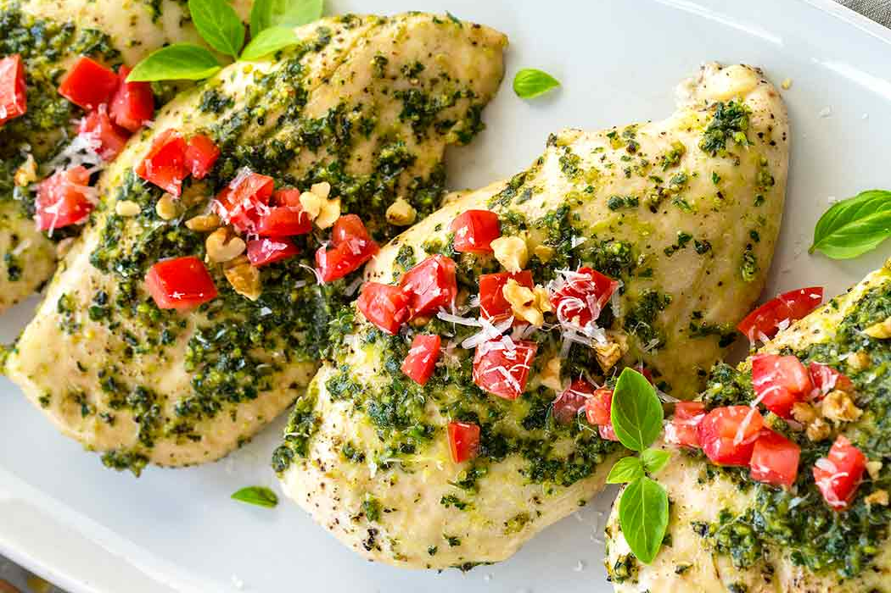

Ingredients
- 120g fettuccine
- 1 ½ tb basil pesto
- 1 rasher bacon
- ¾ cup cream
- ½ tb fresh basil
- 120g chicken breast
- pinch of salt and pepper
- 1 tb parmesan cheese
Method
- Place hot water in a pot, place a lid on it and put it on the stovetop on the highest temperature.
- When the water has boiled, remove the lid and add the fettuccine.
- Cook for approximately 10mins or until al dente.
- In the meantime, using the red chopping board, remove the fat from the bacon and dice.
- Thinly slice the chicken.
- With a separate board and knife, chop the fresh basil.
- Place a frying pan on a medium heat, add spray oil and cook bacon for approximately 1 minute.
- Add the chicken and cook for approx 5 mins or until the chicken is lightly browned and cooked all the way through.
- Add the pesto, cream and a pinch of salt and pepper to the pan.
- Reduce heat to medium/low and cook for approx 5mins or until the creamy sauce has thickened.
- Carefully drain the pasta once it is cooked and separate into two bowls.
- Top with the chicken sauce mixture.
- Garnish with fresh basil and parmesan cheese.
Finished product

Video tutorial